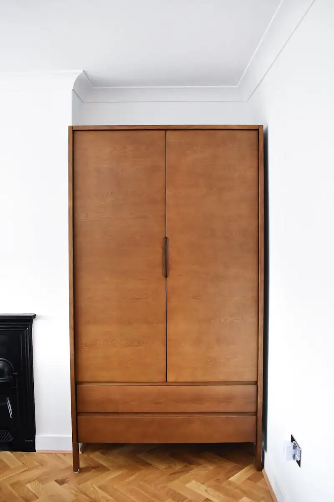

Panduan memilih material lemari kantor mencakup perbandingan multiplex, MDF, dan particle board berdasarkan ketahanan beban, ketahanan kelembaban, serta kesesuaian dengan jenis finishing yang diinginkan.
- Multiplex umumnya paling tahan terhadap beban berat dan kelembaban dibanding dua material lainnya.
- MDF menawarkan permukaan halus yang cocok untuk finishing HPL maupun cat duco.
- Particle board menjadi opsi paling ekonomis namun dengan daya tahan lebih rendah terhadap air.
- Pemilihan material sebaiknya disesuaikan dengan fungsi lemari dan kondisi kelembaban ruangan.
Apa Perbedaan Utama Multiplex, MDF, dan Particle Board?
Perbedaan utama multiplex, MDF, dan particle board terletak pada struktur bahan pembentuknya, yang memengaruhi kekuatan, ketahanan air, dan harga masing-masing material.
Multiplex dibentuk dari lapisan-lapisan veneer kayu yang direkatkan bersilangan arah serat, memberikan struktur yang relatif kuat dan stabil. MDF (Medium Density Fiberboard) terbuat dari serat kayu halus yang dipadatkan dengan lem bertekanan tinggi, menghasilkan permukaan rata namun dengan kepadatan lebih rendah dibanding multiplex. Particle board tersusun dari serpihan kayu kasar yang dipadatkan, sehingga umumnya menjadi opsi paling terjangkau namun dengan ketahanan struktural yang lebih terbatas.
Material Mana yang Paling Tahan terhadap Beban Berat?
Multiplex umumnya menjadi material yang paling tahan terhadap beban berat karena struktur lapisan veneer bersilangannya memberikan kekuatan tarik dan tekan yang lebih merata dibanding MDF maupun particle board.
Karakteristik ini membuat multiplex sering direkomendasikan untuk lemari arsip kantor yang menyimpan dokumen dalam jumlah besar atau peralatan kerja yang cukup berat. MDF masih dapat menahan beban sedang, namun rak dengan bentang panjang tanpa penyangga tambahan berisiko melendut seiring waktu. Particle board, dengan kepadatan lebih rendah, umumnya kurang disarankan untuk rak dengan beban berat dalam jangka panjang.
Bagaimana Cara Menguji Ketahanan Beban Material Lemari?
Cara menguji ketahanan beban material lemari umumnya dilakukan dengan memperhatikan ketebalan panel, jarak antar penyangga rak, serta rekomendasi kontraktor berdasarkan pengalaman proyek serupa.
Klien dapat menanyakan langsung kepada kontraktor mengenai ketebalan panel yang digunakan dan jarak maksimal antar penyangga rak untuk beban tertentu. Kontraktor berpengalaman biasanya sudah memiliki standar internal berdasarkan proyek-proyek sebelumnya untuk memastikan rak tidak melendut meski digunakan dalam jangka panjang.
Material Mana yang Paling Tahan terhadap Kelembaban?
Multiplex umumnya lebih tahan terhadap kelembaban dibanding MDF dan particle board karena struktur lapisan veneernya lebih rapat dan kurang menyerap air dibanding serat kayu padat pada dua material lainnya.
MDF dan particle board memiliki sifat menyerap kelembaban lebih tinggi karena terbuat dari serat atau serpihan kayu yang dipadatkan dengan lem, sehingga lebih rentan mengembang atau rusak jika terpapar air dalam waktu lama. Untuk area kantor dengan tingkat kelembaban tinggi, seperti dekat jendela atau ruang dengan ventilasi terbatas, multiplex sering menjadi pilihan yang lebih aman meski dengan biaya lebih tinggi.
Berdasarkan pengamatan umum pelaku industri furnitur built-in pada 2025, penggunaan multiplex untuk area kantor dengan kelembaban tinggi tercatat lebih banyak direkomendasikan dibanding particle board dalam proyek-proyek renovasi gedung perkantoran.
Apakah MDF Bisa Digunakan di Area Lembap?
MDF masih dapat digunakan di area dengan kelembaban moderat asalkan dilapisi finishing tahan air seperti HPL secara menyeluruh pada seluruh sisi panel, termasuk bagian tepi.
Tanpa pelapisan yang menyeluruh, tepi MDF yang terekspos cenderung menjadi titik lemah pertama yang menyerap kelembaban. Karena itu, kontraktor umumnya menyarankan proses edging atau pelapisan tepi menggunakan PVC edge band untuk memperpanjang usia pakai MDF di area yang berpotensi lembap.
Bagaimana Cara Memilih Material Sesuai Kebutuhan Lemari Kantor?
Cara memilih material sesuai kebutuhan lemari kantor adalah dengan mencocokkan fungsi lemari, tingkat kelembaban ruangan, dan anggaran yang tersedia sebelum menentukan material akhir.
Untuk lemari arsip dengan beban dokumen berat di area lembap, multiplex menjadi pilihan yang lebih aman meski biayanya lebih tinggi. Untuk lemari display atau penyimpanan ringan di ruangan kering, MDF dengan finishing HPL dapat menjadi opsi yang seimbang antara tampilan dan harga. Particle board dapat dipertimbangkan untuk kebutuhan sementara atau anggaran terbatas, dengan catatan bukan untuk area lembap atau beban berat.
Untuk memahami bagaimana pemilihan material ini diterapkan dalam proyek nyata beserta estimasi biayanya, lihat artikel jasa pembuatan lemari kantor custom Jakarta: harga & garansi.
FAQ
Kesimpulan
- Pilih multiplex untuk lemari dengan beban berat atau area lembap.
- Gunakan MDF dengan finishing HPL menyeluruh untuk kebutuhan tampilan rapi dengan anggaran menengah.
- Hindari particle board untuk area lembap atau lemari dengan beban berat jangka panjang.
- Pastikan seluruh tepi panel dilapisi edging untuk mencegah penyerapan kelembaban.